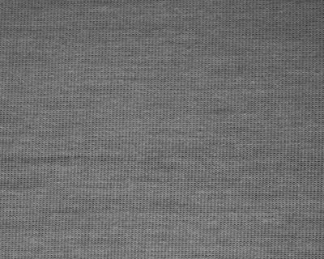
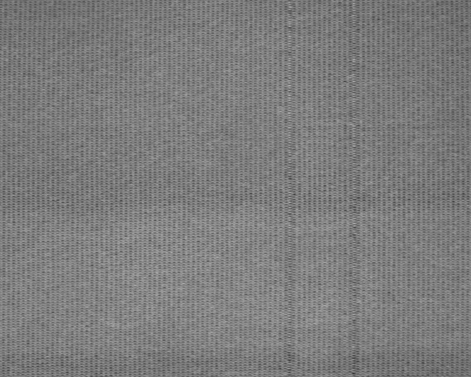

TSFABRICS · RECORDED RESULTS
From features to decision.
FOUNDATION FEATURES
See what the patches reveal.
Two methods score the same recorded photos. DINOv2 ranks defect frames better on average, but each method has misses.

Same photo · model-specific heatmaps
VISUAL SHIFT
The appearance changes.
A separate production run begins. Global image features cross the alert limit; the alert is confirmed 96 frames later.


Two recorded runs joined at a known boundary.
INTERVAL SCORES
Inspect the unusual frames.
The frozen DINOv2 reference scores 2,884 later frames and ranks eight spaced photos. Review starts with two; a defect or uncertain result opens the other six.
LIMITED REVIEW
Check the selected photos.
Each recorded result appears only when its photo is checked. Confirmed defects stay out of the normal reference.
SEPARATE 15-RUN VALIDATION
Hold the candidate.
Reviewed normal photos can form a trial reference. On later frames, it removes normal alerts but also misses more defects, so the frozen reference remains active.
FROZEN REFERENCE → REVIEWED CANDIDATE
15 eligible runs · 20,273 normal frames · 642 defect frames
Read the validation ↗The heatmap comparison uses three curated TSFabrics photos. The middle chapters follow one recorded run; the update decision comes from a separate 15-run validation. Dataset ↗